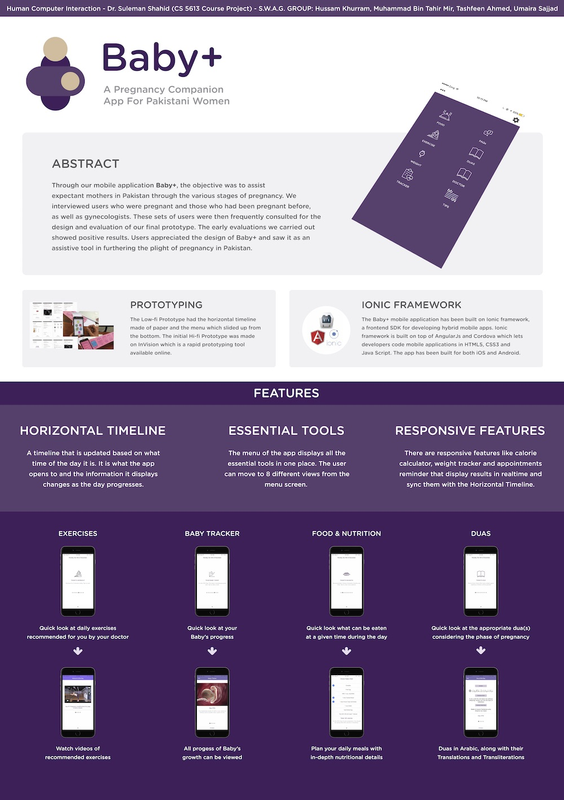

Baby+
With this project, my group members and I set out to aid expectant mothers through the various stages of pregnancy with the use of a mobile application.
When: September 2015 - December 2015
Where: Lahore University of Management Sciences (LUMS)
For: Class titled “Human Computer Interaction”, taught by Dr. Suleman Shahid
Motivation:
In the developed world, several pregnancy applications exist and a lot of research has been put in to them. In Pakistan, however, pregnancies are effected by, for example, the cultural values expected of women. Not much work has been done in the Pakistani context, both, practically and scientifically to understand the needs of pregnant women and to support them using digital aids.
Process:
Research: Empathy building being key, we began the project by educating ourselves about pregnancy. Next, we got in touch with local hospitals and set up meetings with gynecologists, pregnant women, women who had recently been pregnant and those who were expecting to be. We conducted semi-structured interviews with these women. The process relied heavily on building rapport with the interviewees especially because the topic of discussion can be considered inappropriate in the religious and conservative Pakistani context. I was involved with interviews and research throughout this phase.
Above: Interviews conducted during the research phase.
Analysis: We identified problem areas, proposed solutions and conducted another literature review regarding existing applications catering to pregnant women. We finalized the features we wanted to incorporate into our own application. The team had several brainstorming sessions and discussions.

Above: Brainstorming and ideation.
Above: Comparison of features of similar mobile applications.
Prototyping: We went through several iterations for the interface of the application. We then created a lo-fi prototype to run quick usability tests. I was involved with the design of several renditions of the interface and built the lo-fi prototype myself.
Above: Low-fidelity prototype.
Based on feedback from the lo-fi tests, we tinkered with the interface. We then created a hi-fi model using InVision. After that, we conducted our second round of usability tests. Our interface had a horizontal timeline and which gave users access to everything at a glance. More in-depth features could be accessed from the homepage. The timeline could be accessed by swiping down on the screens. Users were very intuitively able to navigate through the app.
Above: Screens from the high-fidelity prototype.
Development and Evaluation: A version of the application with a completely functioning user interface was built using the Ionic framework. We went back to hospitals and ran usability tests on our target demographic and got extensive feedback.
Above: Screens from the final application.
Presentation:
Above: The Baby+ logo.
I composited the video below as an overview of the application:

Above: The poster for Baby+.
Outcomes: I developed interviewing skills and the confidence and ability to talk about topics that may be considered sensitive. This project gave me a small taste of the design thinking process. I learnt the basics of prototyping and realized the importance of an iterative approach to problem solving.